マスコットと一緒に活動するVTuber
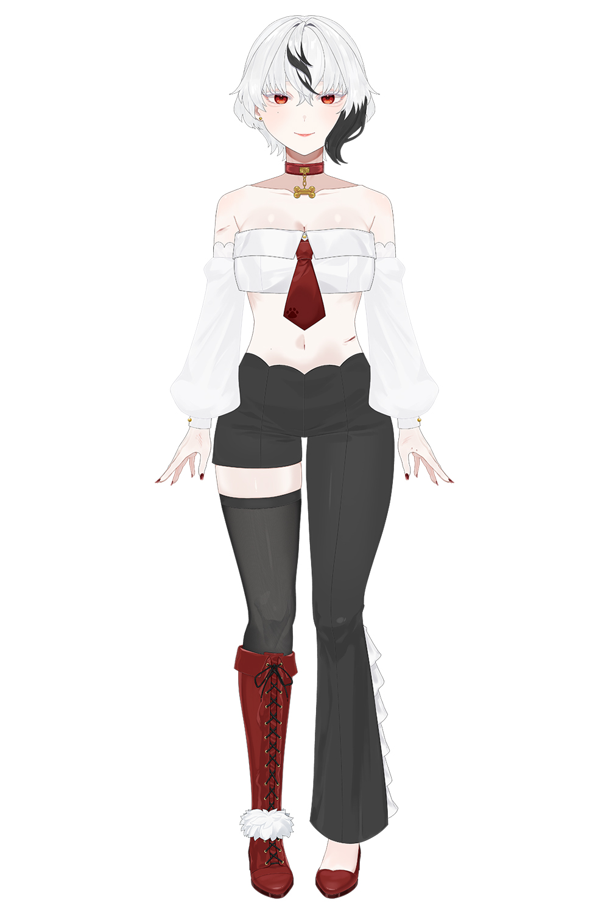
デザイン(15時間) /パーツ分け(4時間) パーツ数:297
立ち絵
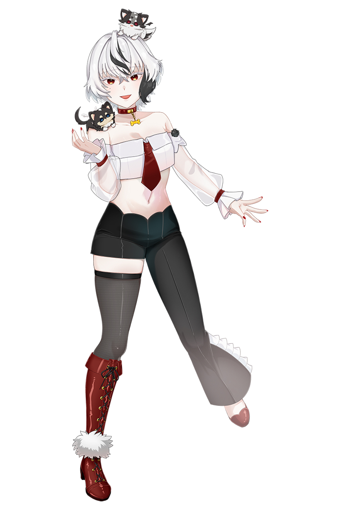
デザイン(6時間)
ラフ
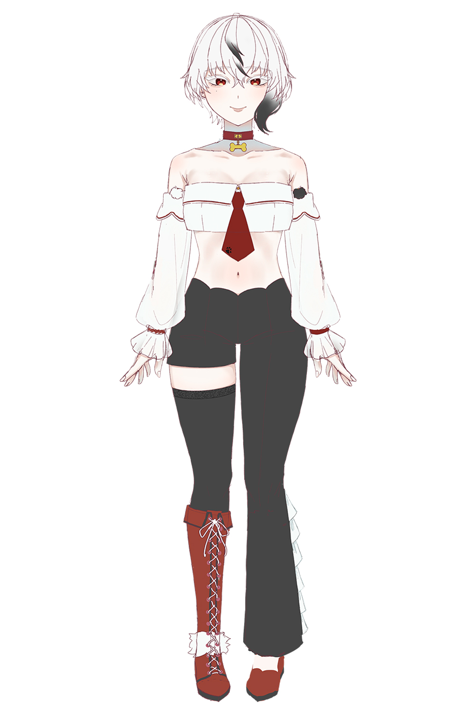
リサーチ(2時間) / デザイン(4時間)
ターゲット
動物が好きな人 / 過去にペットとの別れを経験した人 / 動物系コンテンツで癒されたい人
デザインについて
幅広い層に親しまれるデザインを目指し、大人らしい落ち着いた雰囲気を意識しています。
また、Live2Dでのモデリングを見据え、可動域や変形を考慮したパーツ分けを行い、スムーズに動かしやすい構成を意識して制作しました。
メンバーシップ用スタンプデザイン
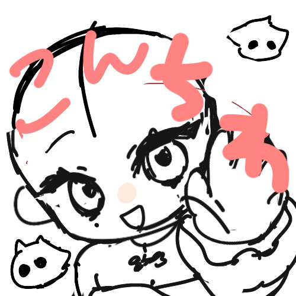
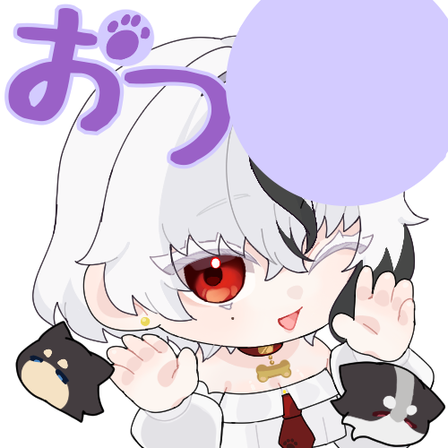
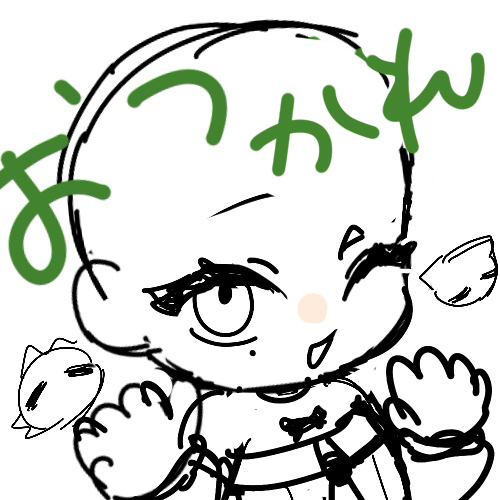
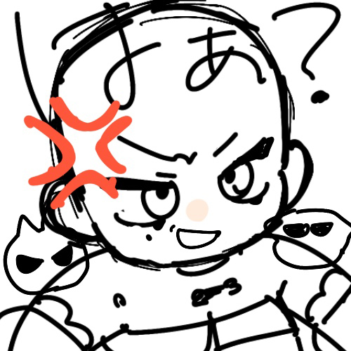
VTuberスタンプリサーチ(2時間) / デザイン(10時間)
デザイン(4時間)
デザインについて
等身高めのぬいぐるみとしての商品化を想定した四面図を制作しました。
正面・側面・背面・上面の各方向から形状やバランスが分かるように設計し、立体化を意識したデザインとなっています。
四面図
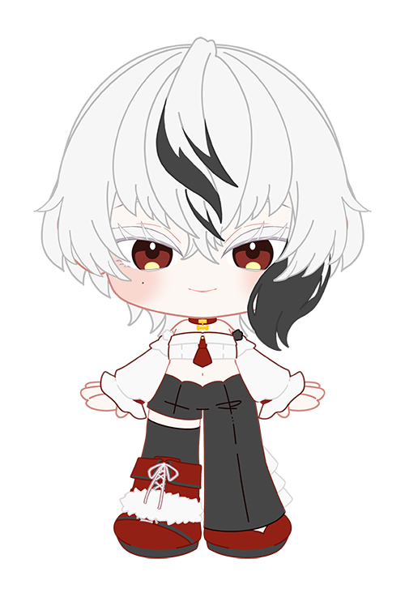
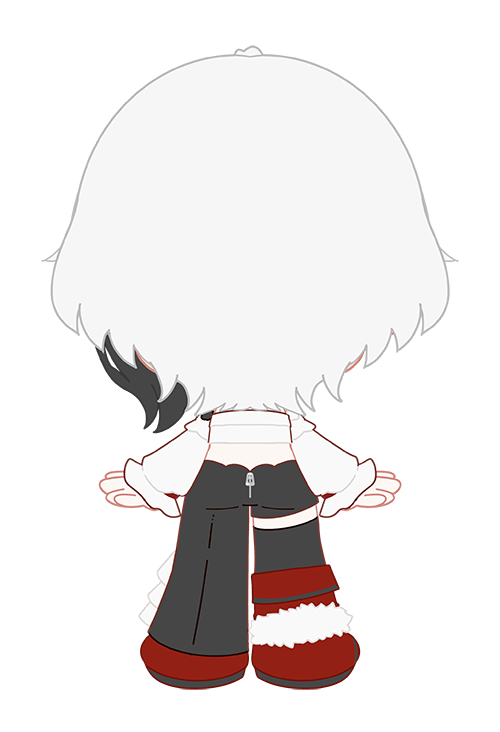
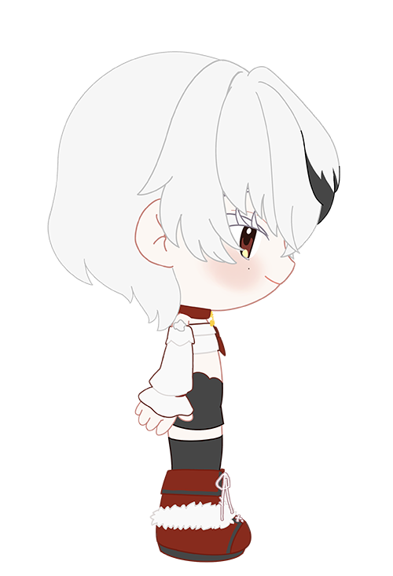
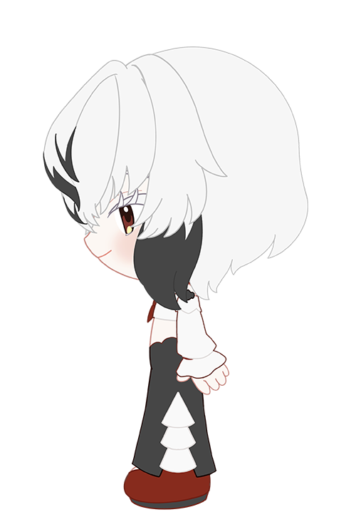
デザイン(10時間)
ぬい風デザイン
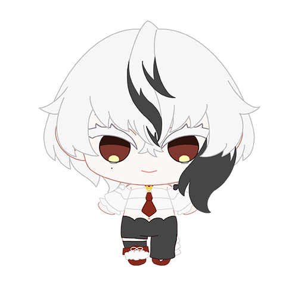
デザイン(4時間)